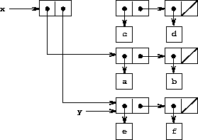
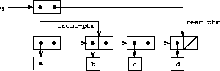

|
O capítulo 2 tratou dos dados compostos como um meio para construir objetos computacionais que possuem várias partes, a fim de modelar objetos do mundo real que possuem vários aspectos. Nesse capítulo, introduzimos a disciplina de abstração de dados, segundo a qual as estruturas de dados são especificadas em termos de construtores, que criam objetos de dados e seletores, que acessam as partes dos objetos de dados compostos. Mas agora sabemos que há outro aspecto dos dados que o capítulo 2 não abordou. O desejo de modelar sistemas compostos por objetos que mudam de estado nos leva à necessidade de modificar objetos de dados compostos, bem como construir e selecionar a partir deles. Para modelar objetos compostos com mudança de estado, projetaremos abstrações de dados para incluir, além de seletores e construtores, operações chamadas mutadores, que modificam objetos de dados. Por exemplo, modelar um sistema bancário exige que alteremos os saldos das contas. Assim, uma estrutura de dados para representar contas bancárias pode admitir uma operação
(set-balance! <account> <new-value>)
que altera o saldo da conta designada para o novo valor designado. Os objetos de dados para os quais os mutadores estão definidos são conhecidos como objetos de dados mutáveis .
O capítulo 2 introduziu os pares como uma "cola" de uso geral para sintetizar dados compostos. Começamos esta seção definindo mutadores básicos para pares, para que os pares possam servir como blocos de construção para a construção de objetos de dados mutáveis. Esses mutadores aumentam bastante o poder representacional dos pares, permitindo construir estruturas de dados diferentes das sequências e árvores com as quais trabalhamos na seção 2.2. Também apresentamos alguns exemplos de simulações nas quais sistemas complexos são modelados como coleções de objetos com o estado local.
As operações básicas dos pares - cons, car e cdr - podem ser usadas para construir a estrutura da lista e selecionar partes da estrutura da lista, mas eles são incapazes de modificar a estrutura da lista. O mesmo vale para as operações de lista que usamos até agora, como append e list, pois elas podem ser definidas em termos de cons, car e cdr. Para modificar estruturas de lista, precisamos de novas operações.
|
 |
|  |
Os mutadores primitivos para pares são set-car! e set-cdr!. Set-car! recebe dois argumentos, o primeiro dos quais deve ser um par. Ele modifica esse par, substituindo o ponteiro car por um ponteiro para o segundo argumento de set-car!.16
Como exemplo, suponha que x esteja ligado à lista ((a b) c d) e y à lista (e f) como ilustrado na figura 3.12. Avaliando a expressão (set-car! x y) modifica o par ao qual x está ligado, substituindo seu car pelo valor de y. O resultado da operação é mostrado na figura 3.13. A estrutura x foi modificada e agora seria impressa como ((e f) c d). Os pares que representam a lista (a b), identificados pelo ponteiro que foi substituído, agora são desanexados da estrutura original.17
Compare a figura 3.13 com a figura 3.14, que ilustra o resultado da execução de (define z (cons y (cdr x))) com x e y ligados às listas originais da figura 3.12. A variável z agora está ligada a um novo par criado pela operação cons; a lista à qual x está ligada permanece inalterada.
A operação set-cdr! é semelhante a set-car!. A única diferença é que o ponteiro cdr do par, em vez do ponteiro car, é substituído. O efeito da execução de (set-cdr! x y) nas listas da figura 3.12 é mostrado na figura 3.15. Aqui, o ponteiro cdr de x foi substituído pelo ponteiro para (e f). Além disso, a lista (c d), que costumava ser o cdr de x, agora é desanexada da estrutura.
Cons cria uma nova estrutura de lista criando novos pares, enquanto set-car! e set-cdr! modificam os pares existentes. De fato, poderíamos implementar cons em termos dos dois mutadores, junto com o procedimento get-new-pair, que retorna um novo par que não faz parte de nenhuma lista existente estrutura. Obtemos o novo par, configuramos seus ponteiros car e cdr para os objetos designados e retornamos o novo par como resultado dos cons. 18
(define (cons x y)
(let ((new (get-new-pair)))
(set-car! new x)
(set-cdr! new y)
new))
Exercício 3.12. O procedimento a seguir para anexar listas foi introduzido na seção 2.2.1:
(define (append x y)
(if (null? x)
y
(cons (car x) (append (cdr x) y))))
Append forma uma nova lista, sucessivamente cons os elementos de x em y. O procedimento append! é semelhante ao append, mas é um mutador e não um construtor. Ele anexa as listas unindo-as, modificando o par final de x para que seu cdr seja agora y. (É um erro chamar append! com um x vazio).
(define (append! x y)
(set-cdr! (last-pair x) y)
x)
Aqui last-pair é um procedimento que retorna o último par em seu argumento:
(define (last-pair x)
(if (null? (cdr x))
x
(last-pair (cdr x))))
Considere a interação
(define x (list 'a 'b))
(define y (list 'c 'd))
(define z (append x y))
z
(a b c d)
(cdr x)
<response>
(define w (append! x y))
w
(a b c d)
(cdr x)
<response>
Quais são as <response>s ausentes? Desenhe diagramas de caixa e ponteiro para explicar sua resposta.
Exercício 3.13. Considere o procedimento make-cycle a seguir, que usa o procedimento last-pair definido no exercício 3.12:
(define (make-cycle x)
(set-cdr! (last-pair x) x)
x)
Desenhe um diagrama de caixa e ponteiro que mostre a estrutura z criada por
(define z (make-cycle (list 'a 'b 'c)))
O que acontece se tentarmos calcular (last-pair z)?
Exercício 3.14. O procedimento a seguir é bastante útil, embora obscuro:
(define (mystery x)
(define (loop x y)
(if (null? x)
y
(let ((temp (cdr x)))
(set-cdr! x y)
(loop temp x))))
(loop x '()))
Loop usa a variável "temporária" temp para manter o valor antigo do cdr de x, pois set-cdr! na próxima linha destrói o cdr. Explique o que mystery faz em geral. Suponha que v seja definido por (define v (list 'a 'b 'c 'd)). Desenhe o diagrama de caixa e ponteiro que representa a lista à qual v está ligado. Suponha que agora avaliamos (define w (mystery v)). Desenhe diagramas de caixa e ponteiro que mostrem as estruturas v e w após avaliar esta expressão. O que seria impresso como os valores de v e w?
Mencionamos na seção 3.1.3 as questões teóricas de "uniformidade" e "mudança" levantadas pela introdução da atribuição. Esses problemas surgem na prática quando pares individuais são compartilhados entre diferentes objetos de dados. Por exemplo, considere a estrutura formada por
(define x (list 'a 'b))
(define z1 (cons x x))
Conforme mostrado na figura 3.16, z1 é um par cujo car e cdr apontam para o mesmo par x. Esse compartilhamento de x pelo car e cdr de z1 é uma consequência da maneira direta pela qual cons é implementado. Em geral, o uso de cons para construir listas resultará em uma estrutura interligada de pares, na qual muitos pares individuais são compartilhados por muitas estruturas diferentes.
 |
 |
Ao contrário da figura 3.16, a figura 3.17 mostra a estrutura criada por
(define z2 (cons (list 'a 'b) (list 'a 'b)))
Nesta estrutura, os pares nas duas listas (a b) são distintos, embora os símbolos reais sejam compartilhados.19
Quando considerados como uma lista, z1 e z2 representam "a mesma" lista, ((a b) a b). Em geral, o compartilhamento é completamente indetectável se operarmos em listas usando apenas cons, car e cdr. Entretanto, se permitirmos mutadores na estrutura da lista, o compartilhamento se tornará significativo. Como um exemplo da diferença que o compartilhamento pode fazer, considere o procedimento a seguir, que modifica o car da estrutura à qual ele é aplicado:
(define (set-to-wow! x)
(set-car! (car x) 'wow)
x)
Mesmo que z1 e z2 sejam "a mesma" estrutura, a aplicação de set-to-wow! a eles gera resultados diferentes. Com z1, alterar o car também altera o cdr, porque em z1 o car e o cdr são o mesmo par. Com z2, o car e o cdr são distintos, portanto set-to-wow! modifica apenas o car:
z1
((a b) a b)
(set-to-wow! z1)
((wow b) wow b)
z2
((a b) a b)
(set-to-wow! z2)
((wow b) a b)
Uma maneira de detectar o compartilhamento em estruturas de lista é usar o predicado eq?, que introduzimos na seção 2.3.1 como uma maneira de teste se dois símbolos são iguais. De maneira mais geral, (eq? x y) testa se x e y são o mesmo objeto (ou seja, se x e y são iguais como ponteiros). Assim, com z1 e z2, conforme definido nas figuras 3.16 e 3.17, (eq? (car z1) (cdr z1)) é verdadeiro e (eq? (car z2) (cdr z2)) é falso.
Como será visto nas seções a seguir, podemos explorar o compartilhamento para estender bastante o repertório de estruturas de dados que podem ser representadas por pares. Por outro lado, o compartilhamento também pode ser perigoso, pois as modificações feitas nas estruturas também afetam outras estruturas que compartilham as partes modificadas. As operações de mutação set-car! e set-cdr! devem ser usadas com cuidado; a menos que tenhamos um bom entendimento de como nossos objetos de dados são compartilhados, a mutação pode ter resultados imprevistos.20
Exercício 3.15. Desenhe diagramas de caixa e ponteiro para explicar o efeito de set-to-wow! nas estruturas z1 e z2 acima.
Exercício 3.16. Ben Bitdiddle decide escrever um procedimento para contar o número de pares em qualquer estrutura de lista. "É fácil", ele argumenta. "O número de pares em qualquer estrutura é o número no car mais o número no cdr mais um para contar o par atual." Então, Ben escreve o seguinte procedimento:
(define (count-pairs x)
(if (not (pair? x))
0
(+ (count-pairs (car x))
(count-pairs (cdr x))
1)))
Mostre que este procedimento não está correto. Em particular, desenhe diagramas de caixa e ponteiro representando estruturas de lista compostas de exatamente três pares para os quais o procedimento de Ben retornaria 3; retornaria 4; retornaria 7; nunca retornaria.
Exercício 3.17. Crie uma versão correta do procedimento count-pairs do exercício 3.16 que retorne o número de pares distintos em qualquer estrutura. (Dica: percorra a estrutura, mantendo uma estrutura de dados auxiliar usada para acompanhar quais pares já foram contados).
Exercício 3.18. Escreva um procedimento que examine uma lista e determine se ela contém um ciclo, ou seja, se um programa que tentou encontrar o fim da lista usando sucessivas cdr s entraria em um loop infinito. O exercício 3.13 construiu essas listas.
Exercício 3.19. Refaça o exercício 3.18 usando um algoritmo que ocupa apenas uma quantidade constante de espaço. (Isso requer uma ideia muito inteligente).
Quando introduzimos dados compostos, observamos na seção 2.1.3 que os pares podem ser representados puramente em termos de procedimentos:
(define (cons x y)
(define (dispatch m)
(cond ((eq? m 'car) x)
((eq? m 'cdr) y)
(else (error "Undefined operation -- CONS" m))))
dispatch)
(define (car z) (z 'car))
(define (cdr z) (z 'cdr))
A mesma observação é verdadeira para dados mutáveis. Podemos implementar objetos de dados mutáveis como procedimentos usando a atribuição e o estado local. Por exemplo, podemos estender a implementação do par acima para lidar com set-car! e set-cdr! de maneira análoga à maneira como implementamos contas bancárias usando make-account na seção 3.1.1:
(define (cons x y)
(define (set-x! v) (set! x v))
(define (set-y! v) (set! y v))
(define (dispatch m)
(cond ((eq? m 'car) x)
((eq? m 'cdr) y)
((eq? m 'set-car!) set-x!)
((eq? m 'set-cdr!) set-y!)
(else (error "Undefined operation -- CONS" m))))
dispatch)
(define (car z) (z 'car))
(define (cdr z) (z 'cdr))
(define (set-car! z new-value)
((z 'set-car!) new-value)
z)
(define (set-cdr! z new-value)
((z 'set-cdr!) new-value)
z)
A atribuição é tudo o que é necessário, teoricamente, para explicar o comportamento de dados mutáveis. Assim que admitimos set! para a nossa linguagem, levantamos todos os problemas, não apenas de atribuição, mas de dados mutáveis em geral.21
Exercício 3.20. Desenhe diagramas de ambiente para ilustrar a avaliação da sequência de expressões
(define x (cons 1 2))
(define z (cons x x))
(set-car! (cdr z) 17)
(car x)
17
usando a implementação processual dos pares dados acima. (Compare o exercício 3.11).
Os mutadores set-car! e set-cdr! nos permitem usar pares para construir estruturas de dados que não podem ser construídas com cons, car e cdr sozinho. Esta seção mostra como usar pares para representar uma estrutura de dados chamada fila. A seção 3.3.3 mostrará como representar estruturas de dados chamadas tabelas.
Uma fila é uma sequência na qual os itens são inseridos em uma extremidade (chamada traseira da fila) e excluídos da outra extremidade (a frente). A figura 3.18 mostra uma fila inicialmente vazia na qual os itens a e b são inseridos. Em seguida, a é removido, c e d são inseridos e b é removido. Como os itens são sempre removidos na ordem em que são inseridos, às vezes uma fila é chamada de buffer FIFO (first in, first out), (primeiro a entrar, primeiro a sair), em português.
| ||||||||||||||||
Em termos de abstração de dados, podemos considerar uma fila conforme definido pelo seguinte conjunto de operações:
Como uma fila é uma sequência de itens, certamente poderíamos representá-la como uma lista comum; a frente da fila seria o car da lista, inserir um item na fila equivaleria a acrescentar um novo elemento ao final da lista e excluir um item da fila seria apenas tomando o cdr da lista. No entanto, essa representação é ineficiente, pois, para inserir um item, precisamos varrer a lista até chegar ao fim. Como o único método que temos para varrer uma lista é por sucessivas operações cdr, essa varredura requer θ (n) etapas para uma lista de n itens. Uma modificação simples na representação da lista supera essa desvantagem ao permitir que as operações da fila sejam implementadas de forma que exijam etapas θ (1); isto é, para que o número de etapas necessárias seja independente do comprimento da fila.
A dificuldade com a representação da lista decorre da necessidade de varrer para encontrar o final da lista. A razão pela qual precisamos varrer é que, embora a maneira padrão de representar uma lista como uma cadeia de pares prontamente nos forneça um ponteiro para o início da lista, ela não nos fornece um ponteiro facilmente acessível para o final. A modificação que evita a desvantagem é representar a fila como uma lista, com um ponteiro adicional que indica o par final na lista. Dessa forma, quando formos inserir um item, podemos consultar o ponteiro traseiro e evitar a varredura da lista.
Uma fila é representada, então, como um par de ponteiros, front-ptr e rear-ptr, que indicam, respectivamente, o primeiro e o último pares em uma lista comum. Como queremos que a fila seja um objeto identificável, podemos usar cons para combinar os dois ponteiros. Assim, a própria fila será os cons dos dois ponteiros. A figura 3.19 ilustra essa representação.
 |
Para definir as operações da fila, usamos os seguintes procedimentos, que permitem selecionar e modificar os ponteiros frontal e traseiro de uma fila:
(define (front-ptr queue) (car queue))
(define (rear-ptr queue) (cdr queue))
(define (set-front-ptr! queue item) (set-car! queue item))
(define (set-rear-ptr! queue item) (set-cdr! queue item))
Agora podemos implementar as operações da fila real. Consideraremos que uma fila está vazia se o ponteiro da frente for a lista vazia:
(define (empty-queue? queue) (null? (front-ptr queue)))
O construtor make-queue retorna, como uma fila inicialmente vazia, um par cujo car e cdr são a lista vazia:
(define (make-queue) (cons '() '()))
Para selecionar o item na frente da fila, retornamos o car do par indicado pelo ponteiro frontal:
(define (front-queue queue)
(if (empty-queue? queue)
(error "FRONT called with an empty queue" queue)
(car (front-ptr queue))))
Para inserir um item em uma fila, seguimos o método cujo resultado é indicado na figura 3.20. Primeiro, criamos um novo par cujo car é o item a ser inserido e cujo cdr é a lista vazia. Se a fila estava inicialmente vazia, definimos os ponteiros dianteiro e traseiro da fila para esse novo par. Caso contrário, modificamos o par final na fila para apontar para o novo par e também configuramos o ponteiro traseiro para o novo par.
 |
(define (insert-queue! queue item)
(let ((new-pair (cons item '())))
(cond ((empty-queue? queue)
(set-front-ptr! queue new-pair)
(set-rear-ptr! queue new-pair)
queue)
(else
(set-cdr! (rear-ptr queue) new-pair)
(set-rear-ptr! queue new-pair)
queue))))
Para excluir o item na frente da fila, apenas modificamos o ponteiro frontal para que agora aponte para o segundo item da fila, que pode ser encontrado seguindo o ponteiro cdr do primeiro item (veja a figura 3.21):22
|  |
(define (delete-queue! queue)
(cond ((empty-queue? queue)
(error "DELETE! called with an empty queue" queue))
(else
(set-front-ptr! queue (cdr (front-ptr queue)))
queue)))
Exercício 3.21. Ben Bitdiddle decide testar a implementação da fila descrita acima. Ele digita os procedimentos para o interpretador Lisp e passa a testá-los:
(define q1 (make-queue))
(insert-queue! q1 'a)
((a) a)
(insert-queue! q1 'b)
((a b) b)
(delete-queue! q1)
((b) b)
(delete-queue! q1)
(() b)
"Está tudo errado!" Ele reclama. “A resposta do interpretador mostra que o último item é inserido na fila duas vezes. E quando eu apago os dois itens, o segundo b ainda está lá, então a fila não está vazia, mesmo que deva estar.” Eva Lu Ator sugere que Ben não entendeu o que está acontecendo. "Não é que os itens entrem na fila duas vezes", explica ela. “É que a impressora Lisp padrão não sabe como entender a representação da fila. Se você quiser ver a fila impressa corretamente, precisará definir seu próprio procedimento de impressão para as filas.” Explique do que Eva Lu está falando. Em particular, mostre por que os exemplos de Ben produzem os resultados impressos que eles produzem. Defina um procedimento print-queue que recebe uma fila como entrada e imprime a sequência de itens na fila.
Exercício 3.22. Em vez de representar uma fila como um par de ponteiros, podemos construir uma fila como um procedimento com o estado local. O estado local consistirá em ponteiros para o início e o fim de uma lista comum. Portanto, o procedimento make-queue terá o formato
(define (make-queue)
(let ((front-ptr ...)
(rear-ptr ...))
<definitions of internal procedures>
(define (dispatch m) ...)
dispatch))
Conclua a definição de make-queue e forneça implementações das operações da fila usando esta representação.
Exercício 3.23. Um deque (“double-ended queue” ou "fila dupla", em português) é uma sequência na qual os itens podem ser inseridos e excluídos na frente ou na parte traseira. As operações no deques são o construtor make-deque, o predicado empty-deque?, os seletores front-deque e rear-deque e mutadores front-insert-deque!, rear-insert-deque!, front-delete-deque! e rear-delete-deque!. Mostre como representar deques usando pares e forneça implementações das operações.23 Todas as operações devem ser realizadas em θ (1) etapas.
Quando estudamos várias maneiras de representar conjuntos no capítulo 2, mencionamos na seção 2.3.3 a tarefa de manter uma tabela de registradores indexados pela identificação de chaves. Na implementação da programação orientada a dados na seção 2.4.3, fizemos amplo uso de tabelas bidimensionais, nas quais as informações são armazenadas e recuperadas usando duas chaves. Aqui vemos como criar tabelas como estruturas de lista mutáveis.
Primeiro, consideramos uma tabela unidimensional, na qual cada valor é armazenado em uma única chave. Implementamos a tabela como uma lista de registradores, cada um dos quais, é implementado como um par que consiste em uma chave e o valor associado. Os registradores são colados para formar uma lista por pares cujos car s apontam para registradores sucessivos. Esses pares de colagem são chamados de espinha dorsal da tabela. Para ter um lugar que podemos mudar quando adicionamos um novo registrador à tabela, construímos a tabela como uma lista com cabeçalho. Uma lista com cabeçalho possui um par de espinha dorsal especial no início, que contém um "registrador" fictício - nesse caso, o símbolo escolhido arbitrariamente *table*. A figura 3.22 mostra o diagrama de caixa e ponteiro para a tabela
a: 1
b: 2
c: 3
 |
Para extrair informações de uma tabela, usamos o procedimento lookup, que recebe uma chave como argumento e retorna o valor associado (ou falso se não houver valor armazenado sob essa chave). Lookup é definida em termos da operação assoc, que espera uma chave e uma lista de registradores como argumentos. Observe que assoc nunca vê o registrador fictício. Assoc retorna o registrador que possui a chave fornecida como car. 24 Lookup verifica se o registrador resultante retornado por assoc não é falso e retorna o valor (o cdr) do registrador.
(define (lookup key table)
(let ((record (assoc key (cdr table))))
(if record
(cdr record)
false)))
(define (assoc key records)
(cond ((null? records) false)
((equal? key (caar records)) (car records))
(else (assoc key (cdr records)))))
Para inserir um valor em uma tabela sob uma chave especificada, primeiro usamos assoc para verificar se já existe um registrador na tabela com essa chave. Caso contrário, formamos um novo registrador aplicando cons na chave com o valor e o inserimos no início da lista de registradores da tabela, após o registrador fictício. Se já existe um registrador com essa chave, definimos o cdr desse registrador com o novo valor designado. O cabeçalho da tabela fornece um local fixo para modificar para inserir o novo registrador.25
(define (insert! key value table)
(let ((record (assoc key (cdr table))))
(if record
(set-cdr! record value)
(set-cdr! table
(cons (cons key value) (cdr table)))))
'ok)
Para construir uma nova tabela, simplesmente criamos uma lista contendo o símbolo *table*:
(define (make-table)
(list '*table*))
Em uma tabela bidimensional, cada valor é indexado por duas chaves. Podemos construir uma tabela como uma tabela unidimensional na qual cada chave identifica uma subtabela. A figura 3.23 mostra o diagrama de caixa e ponteiro para a tabela
math:
+: 43
-: 45
*: 42
letters:
a: 97
b: 98
que possui duas subtabelas. (As subtabelas não precisam de um símbolo de cabeçalho especial, pois a chave que identifica a subtabela serve a esse propósito).
 |
Quando procuramos um item, usamos a primeira cheva para identificar a subtabela correta. Em seguida, usamos a segunda chave para identificar o registrador na subtabela.
(define (lookup key-1 key-2 table)
(let ((subtable (assoc key-1 (cdr table))))
(if subtable
(let ((record (assoc key-2 (cdr subtable))))
(if record
(cdr record)
false))
false)))
Para inserir um novo item em um par de chaves, usamos assoc para verificar se há uma subtabela armazenada sob a primeira chave. Caso contrário, criamos uma nova subtabela que contém o registrador único (key-2, value) e o inserimos na tabela abaixo da primeira chave. Se já existe uma subtabela para a primeira chave, inserimos o novo registrador nessa subtabela, usando o método de inserção para tabelas unidimensionais descritas acima:
(define (insert! key-1 key-2 value table)
(let ((subtable (assoc key-1 (cdr table))))
(if subtable
(let ((record (assoc key-2 (cdr subtable))))
(if record
(set-cdr! record value)
(set-cdr! subtable
(cons (cons key-2 value)
(cdr subtable)))))
(set-cdr! table
(cons (list key-1
(cons key-2 value))
(cdr table)))))
'ok)
As operações lookup e insert! definidas acima levam a tabela como argumento. Isso nos permite usar programas que acessam mais de uma tabela. Outra maneira de lidar com várias tabelas é ter procedimentos separados de lookup e insert! para cada tabela. Podemos fazer isso representando uma tabela processualmente, como um objeto que mantém uma tabela interna como parte de seu estado local. Quando enviada uma mensagem apropriada, esse "objeto de tabela" fornece o procedimento com o qual operar na tabela interna. Aqui está um gerador para tabelas bidimensionais representadas desta maneira:
(define (make-table)
(let ((local-table (list '*table*)))
(define (lookup key-1 key-2)
(let ((subtable (assoc key-1 (cdr local-table))))
(if subtable
(let ((record (assoc key-2 (cdr subtable))))
(if record
(cdr record)
false))
false)))
(define (insert! key-1 key-2 value)
(let ((subtable (assoc key-1 (cdr local-table))))
(if subtable
(let ((record (assoc key-2 (cdr subtable))))
(if record
(set-cdr! record value)
(set-cdr! subtable
(cons (cons key-2 value)
(cdr subtable)))))
(set-cdr! local-table
(cons (list key-1
(cons key-2 value))
(cdr local-table)))))
'ok)
(define (dispatch m)
(cond ((eq? m 'lookup-proc) lookup)
((eq? m 'insert-proc!) insert!)
(else (error "Unknown operation -- TABLE" m))))
dispatch))
Usando make-table, poderíamos implementar as operações get e put usadas na seção 2.4.3 para programação orientada a dados, como segue:
(define operation-table (make-table))
(define get (operation-table 'lookup-proc))
(define put (operation-table 'insert-proc!))
Get usa como argumentos duas chaves, e put usa como argumentos duas chaves e um valor. Ambas as operações acessam a mesma tabela local, que é encapsulada dentro do objeto criado pela chamada para make-table.
Exercício 3.24. Nas implementações da tabela acima, as chaves são testadas quanto à igualdade usando equal? (chamado por assoc). Esse nem sempre é o teste apropriado. Por exemplo, podemos ter uma tabela com teclas numéricas na qual não precisamos de uma correspondência exata com o número que estamos procurando, mas apenas um número com alguma tolerância. Crie um construtor de tabela make-table que use como argumento um procedimento same-key? que será usado para testar a "igualdade" de chaves. Make-table deve retornar um procedimento dispatch que pode ser usado para acessar os procedimentos apropriados de lookup e insert! para uma tabela local.
Exercício 3.25. Generalizando tabelas unidimensionais e bidimensionais, mostre como implementar uma tabela na qual os valores são armazenados sob um número arbitrário de chaves e diferentes valores podem ser armazenados sob diferentes números de chaves. Os procedimentos lookup e insert! devem ter como entrada uma lista de chaves usadas para acessar a tabela.
Exercício 3.26. Para pesquisar uma tabela conforme implementada acima, é necessário verificar a lista de registradores. Esta é basicamente a representação de lista não ordenada da seção 2.3.3. Para tabelas grandes, pode ser mais eficiente estruturar a tabela de uma maneira diferente. Descreva uma implementação de tabela em que os registradores (chave, valor) sejam organizados usando uma árvore binária, assumindo que as chaves possam ser ordenadas de alguma maneira (por exemplo, numericamente ou alfabeticamente). (Compare o exercício 2.66 do capítulo 2).
Exercício 3.27. Memoização (também chamada de tabulação) é uma técnica que permite que um procedimento registre, em uma tabela local, valores que foram computados anteriormente. Essa técnica pode fazer uma grande diferença no desempenho de um programa. Um procedimento memoizado mantém uma tabela na qual os valores de chamadas anteriores são armazenados usando como chaves os argumentos que produziram os valores. Quando o procedimento memoizado é solicitado a calcular um valor, ele primeiro verifica a tabela para ver se o valor já existe e, nesse caso, apenas retorna esse valor. Caso contrário, ele calcula o novo valor da maneira comum e o armazena na tabela. Como exemplo de memoização, lembre-se da seção 1.2.2 do processo exponencial para calcular os números de Fibonacci:
(define (fib n)
(cond ((= n 0) 0)
((= n 1) 1)
(else (+ (fib (- n 1))
(fib (- n 2))))))
A versão memoizada do mesmo procedimento é
(define memo-fib
(memoize (lambda (n)
(cond ((= n 0) 0)
((= n 1) 1)
(else (+ (memo-fib (- n 1))
(memo-fib (- n 2))))))))
onde o memoizador é definido como
(define (memoize f)
(let ((table (make-table)))
(lambda (x)
(let ((previously-computed-result (lookup x table)))
(or previously-computed-result
(let ((result (f x)))
(insert! x result table)
result))))))
Desenhe um diagrama do ambiente para analisar o cálculo de (memo-fib 3). Explique por que memo-fib calcula o n ésimo número de Fibonacci em uma série de etapas proporcionais a n. O esquema ainda funcionaria se tivéssemos simplesmente definido memo-fib como (memoize fib)?
Projetar sistemas digitais complexos, como computadores, é uma importante atividade de engenharia. Os sistemas digitais são construídos interconectando elementos simples. Embora o comportamento desses elementos individuais seja simples, as redes deles podem ter um comportamento muito complexo. A simulação por computador dos projetos de circuitos propostos é uma ferramenta importante usada pelos engenheiros de sistemas digitais. Nesta seção, projetamos um sistema para realizar simulações de lógica digital. Este sistema tipifica um tipo de programa chamado simulação orientada a eventos, na qual ações ("eventos") acionam outros eventos que acontecem posteriormente, que por sua vez acionar mais eventos e assim por diante.
Nosso modelo computacional de um circuito será composto de objetos que correspondem aos componentes elementares dos quais o circuito é construído. Existem fios, que carregam sinais digitais. Um sinal digital pode a qualquer momento ter apenas um dos dois valores possíveis, 0 e 1. Existem também vários tipos de caixas de função que conectam fios que transportam sinais de entrada a outros fios de saída. Tais caixas produzem sinais de saída calculados a partir de seus sinais de entrada. O sinal de saída é atrasado por um tempo que depende do tipo da caixa de função. Por exemplo, um inversor é uma caixa de função primitiva que inverte sua entrada. Se o sinal de entrada de um inversor mudar para 0, um atraso no inversor depois o inversor alterará seu sinal de saída para 1. Se o sinal de entrada de um inversor mudar para 1, um atraso no inversor depois o inversor alterará seu sinal de saída para 0. Desenhamos um inversor simbolicamente, como na figura 3.24. Uma porta and, também mostrado na figura 3.24, é uma caixa de função primitiva com duas entradas e uma saída. Ele direciona seu sinal de saída para um valor que é and lógico das entradas. Ou seja, se ambos os sinais de entrada se tornarem 1, um tempo de atraso da porta e mais tarde a porta and forçará seu sinal de saída a 1; caso contrário, a saída será 0. Uma porta or é uma caixa de função primitiva de duas entradas semelhante que direciona seu sinal de saída para um valor que é or lógico do entradas. Ou seja, a saída se tornará 1 se, pelo menos, um dos sinais de entrada for 1; caso contrário, a saída se tornará 0.
 |
Podemos conectar funções primitivas juntas para construir funções mais complexas. Para fazer isso, conectamos as saídas de algumas caixas de função às entradas de outras caixas de função. Por exemplo, o circuito semi-somador??? mostrado na figura 3.25 consiste em uma porta or, duas portas and e um inversor. É preciso dois sinais de entrada, A e B, e possui dois sinais de saída, S e C. S se tornará 1 sempre que precisamente um de A e B for 1, e C se tornará 1 sempre que A e B forem 1. Podemos ver pela figura que, devido aos atrasos envolvidos, os resultados podem ser gerados em momentos diferentes. Muitas das dificuldades no projeto de circuitos digitais surgem desse fato.
 |
Agora construiremos um programa para modelar os circuitos lógicos digitais que queremos estudar. O programa construirá objetos computacionais modelando os fios, os quais “reterão” os sinais. As caixas de função serão modeladas por procedimentos que reforçam os relacionamentos corretos entre os sinais.
Um elemento básico da nossa simulação será um procedimento make-wire, que constrói fios. Por exemplo, podemos construir seis fios da seguinte maneira:
(define a (make-wire))
(define b (make-wire))
(define c (make-wire))
(define d (make-wire))
(define e (make-wire))
(define s (make-wire))
Anexamos uma caixa de função a um conjunto de fios chamando um procedimento que constrói esse tipo de caixa. Os argumentos para o procedimento construtor são os fios a serem anexados à caixa. Por exemplo, dado que podemos construir portas and, portas or e inversores, podemos conectar o semi-somador mostrado na figura 3.25:
(or-gate a b d)
ok
(and-gate a b c)
ok
(inverter c e)
ok
(and-gate d e s)
ok
Melhor ainda, podemos nomear explicitamente essa operação definindo um procedimento half-adder que constrói esse circuito, considerando os quatro fios externos a serem conectados ao semi-somador:
(define (half-adder a b s c)
(let ((d (make-wire)) (e (make-wire)))
(or-gate a b d)
(and-gate a b c)
(inverter c e)
(and-gate d e s)
'ok))
A vantagem de fazer essa definição é que podemos usar half-adder como um bloco de construção na criação de circuitos mais complexos. Figura 3.26, por exemplo, mostra um somador completo??? composto por dois semi-aditivos e uma porta or.26 Podemos construir um somador completo da seguinte maneira:
(define (full-adder a b c-in sum c-out)
(let ((s (make-wire))
(c1 (make-wire))
(c2 (make-wire)))
(half-adder b c-in s c1)
(half-adder a s sum c2)
(or-gate c1 c2 c-out)
'ok))
Tendo definido full-adder como procedimento, agora podemos usá-lo como um bloco de construção para criar circuitos ainda mais complexos. (Por exemplo, consulte exercício 3.30).
 |
Em essência, nosso simulador nos fornece as ferramentas para construir uma linguagem de circuitos. Se adotarmos a perspectiva geral sobre linguagens com a qual abordamos o estudo do Lisp na seção 1.1, podemos dizer que as caixas de função primitivas formam os elementos primitivos da linguagem, que as caixas de ligação juntas fornecem um meio de combinação e que especificar padrões de fiação como procedimentos serve como um meio de abstração.
As caixas de função primitivas implementam as "forças" pelas quais uma mudança no sinal em um fio influencia os sinais em outros fios. Para criar caixas de função, usamos as seguintes operações nos fios:
Além disso, faremos uso de um procedimento after-delay isso demora um tempo e um procedimento a ser executado e executa o procedimento especificado após o atraso especificado.
Usando esses procedimentos, podemos definir as funções primitivas da lógica digital. Para conectar uma entrada a uma saída através de um inversor, usamos add-action! para associar ao fio de entrada um procedimento que será executado sempre que o sinal no fio de entrada mudar de valor. O procedimento calcula o logical-not do sinal de entrada e depois de um inverter-delay, define o sinal de saída para esse novo valor:
(define (inverter input output)
(define (invert-input)
(let ((new-value (logical-not (get-signal input))))
(after-delay inverter-delay
(lambda ()
(set-signal! output new-value)))))
(add-action! input invert-input)
'ok)
(define (logical-not s)
(cond ((= s 0) 1)
((= s 1) 0)
(else (error "Invalid signal" s))))
Uma porta and é um pouco mais complexa. O procedimento de ação deve ser executado se alguma das entradas da porta mudar. Ele calcula o logical-and (usando um procedimento análogo ao logical-not) dos valores dos sinais nos fios de entrada e configura uma alteração no novo valor que ocorrerá no fio de saída após um and-gate-delay.
(define (and-gate a1 a2 output)
(define (and-action-procedure)
(let ((new-value
(logical-and (get-signal a1) (get-signal a2))))
(after-delay and-gate-delay
(lambda ()
(set-signal! output new-value)))))
(add-action! a1 and-action-procedure)
(add-action! a2 and-action-procedure)
'ok)
Exercício 3.28. Defina uma porta or como uma caixa de função primitiva. Seu or-gate construtor deve ser semelhante ao and-gate.
Exercício 3.29. Outra maneira de construir uma porta or é como um dispositivo lógico digital composto, construído a partir de portas e inversores. Defina um procedimento or-gate que realiza isso. Qual é o tempo de atraso da porta or em termos de and-gate-delay e inverter-delay?
Exercício 3.30. Figura 3.27 mostra um somador de transporte formado amarrando junto n adicionadores completos. Essa é a forma mais simples de somador paralelo para adicionar dois números binários de n bits. As entradas A1, A2, A3, …, An e B1, B2, B3, …, Bn são os dois números binários a serem adicionados (cada Ak e Bk é 0 ou 1). O circuito gera S1, S2, S3, …, Sn, a n bits da soma e C, o carry da adição. Escreva um procedimento ripple-carry-adder que gera esse circuito. O procedimento deve tomar como argumentos três listas de n fios cada - o Ak, o Bk, e o Sk - e também outro fio C. A principal desvantagem do somador de transporte de ondulação é a necessidade de aguardar a propagação dos sinais de transporte. Qual é o atraso necessário para obter a saída completa de um somador de transporte de onda de n bits, expresso em termos de atrasos para portas and, portas or e inversores?
 |
Um fio em nossa simulação será um objeto computacional com duas variáveis de estado local: signal-value (inicialmente considerado 0) e uma coleção de action-procedures para ser executado quando o sinal mudar de valor. Implementamos a ligação, usando o estilo de passagem de mensagens, como uma coleção de procedimentos locais, com um procedimento dispatch que seleciona a operação local apropriada, assim como fizemos com o objeto simples de conta bancária na seção 3.1.1:
(define (make-wire)
(let ((signal-value 0) (action-procedures '()))
(define (set-my-signal! new-value)
(if (not (= signal-value new-value))
(begin (set! signal-value new-value)
(call-each action-procedures))
'done))
(define (accept-action-procedure! proc)
(set! action-procedures (cons proc action-procedures))
(proc))
(define (dispatch m)
(cond ((eq? m 'get-signal) signal-value)
((eq? m 'set-signal!) set-my-signal!)
((eq? m 'add-action!) accept-action-procedure!)
(else (error "Unknown operation -- WIRE" m))))
dispatch))
O procedimento local set-my-signal! testa se o novo valor do sinal altera o sinal no fio. Nesse caso, ele executa cada um dos procedimentos de ação, usando o seguinte procedimento call-each, que chama cada um dos itens em uma lista de procedimentos sem argumento:
(define (call-each procedures)
(if (null? procedures)
'done
(begin
((car procedures))
(call-each (cdr procedures)))))
O procedimento local accept-action-procedure! adiciona o procedimento especificado à lista de procedimentos a serem executados e, em seguida, executa o novo procedimento uma vez. (Ver exercício 3.31).
Com o procedimento local dispatch configurado conforme especificado, podemos fornecer os seguintes procedimentos para acessar as operações locais nos fios:27
(define (get-signal wire)
(wire 'get-signal))
(define (set-signal! wire new-value)
((wire 'set-signal!) new-value))
(define (add-action! wire action-procedure)
((wire 'add-action!) action-procedure))
Os fios, que possuem sinais que variam no tempo e podem ser conectados de forma incremental aos dispositivos, são típicos de objetos mutáveis. Os modelamos como procedimentos com variáveis de estado local que são modificadas por atribuição. Quando um novo fio é criado, um novo conjunto de variáveis de estado é alocado (pela expressão let em make-wire) e um novo procedimento dispatch é construído e retornado, capturando o ambiente com as novas variáveis de estado.
Os fios são compartilhados entre os vários dispositivos que foram conectados a eles. Assim, uma alteração feita por uma interação com um dispositivo afetará todos os outros dispositivos conectados ao fio. O fio comunica a alteração aos vizinhos chamando os procedimentos de ação fornecidos quando as conexões foram estabelecidas.
O único objeto necessário para concluir o simulador é after-delay. A ideia aqui é que mantemos uma estrutura de dados, chamada agenda, que contém uma programação do que deve ser feito. As seguintes operações são definidas para agendas:
A agenda específica que usamos é indicada por the-agenda. O procedimento after-delay adiciona novos elementos à the-agenda:
(define (after-delay delay action)
(add-to-agenda! (+ delay (current-time the-agenda))
action
the-agenda))
A simulação é conduzida pelo procedimento propagate, que opera em the-agenda, executando cada procedimento na agenda em sequência. Em geral, à medida que a simulação é executada, novos itens serão adicionados à agenda e propagate continuará a simulação enquanto houver itens na agenda:
(define (propagate)
(if (empty-agenda? the-agenda)
'done
(let ((first-item (first-agenda-item the-agenda)))
(first-item)
(remove-first-agenda-item! the-agenda)
(propagate))))
O procedimento a seguir, que coloca uma “sonda” em um fio, mostra o simulador em ação. A sonda diz ao fio que, sempre que seu sinal mudar de valor, ele deve imprimir o novo valor do sinal, junto com a hora atual e um nome que identifique o fio:
(define (probe name wire)
(add-action! wire
(lambda ()
(newline)
(display name)
(display " ")
(display (current-time the-agenda))
(display " New-value = ")
(display (get-signal wire)))))
Começamos inicializando a agenda e especificando atrasos para as caixas de função primitivas:
(define the-agenda (make-agenda))
(define inverter-delay 2)
(define and-gate-delay 3)
(define or-gate-delay 5)
Agora, definimos quatro fios, colocando sondas em dois deles:
(define input-1 (make-wire))
(define input-2 (make-wire))
(define sum (make-wire))
(define carry (make-wire))
(probe 'sum sum)
sum 0 New-value = 0
(probe 'carry carry)
carry 0 New-value = 0
Em seguida, conectamos os fios em um circuito semi-somador (como na figura 3.25), configuramos o sinal na input-1 para 1 e executamos a simulação:
(half-adder input-1 input-2 sum carry)
ok
(set-signal! input-1 1)
done
(propagate)
sum 8 New-value = 1
done
O sum o sinal muda para 1 no tempo 8. Agora somos oito unidades de tempo desde o início da simulação. Neste ponto, podemos definir o sinal input-2 para 1 e permita a propagação dos valores:
(set-signal! input-2 1)
done
(propagate)
carry 11 New-value = 1
sum 16 New-value = 0
done
O carry muda para 1 no tempo 11 e o sum muda para 0 no horário 16.
Exercício 3.31. O procedimento interno accept-action-procedure! definido em make-wire especifica que quando um novo procedimento de ação é adicionado a uma ligação, o procedimento é executado imediatamente. Explique por que essa inicialização é necessária. Em particular, rastreie o exemplo do meio adicionador nos parágrafos acima e diga como a resposta do sistema seria diferente se tivéssemos definido accept-action-procedure! Como
(define (accept-action-procedure! proc)
(set! action-procedures (cons proc action-procedures)))
Por fim, fornecemos detalhes da estrutura de dados da agenda, que contém os procedimentos agendados para execução futura.
A agenda é composta de segmentos de tempo. Cada segmento de tempo é um par que consiste em um número (a hora) e uma fila (veja exercício 3.32) que mantém os procedimentos que estão programados para serem executados durante esse segmento de tempo.
(define (make-time-segment time queue)
(cons time queue))
(define (segment-time s) (car s))
(define (segment-queue s) (cdr s))
Operaremos nas filas do segmento de tempo usando as operações de fila descritas na seção 3.3.2.
A agenda em si é uma tabela unidimensional de segmentos de tempo. Difere das tabelas descritas na seção 3.3.3. em que os segmentos serão classificados em ordem crescente de tempo. Além disso, armazenamos a hora atual (ou seja, o horário da última ação que foi processada) no início da agenda. Uma agenda recém-construída não possui segmentos de tempo e possui um horário atual de 0:28.
(define (make-agenda) (list 0))
(define (current-time agenda) (car agenda))
(define (set-current-time! agenda time)
(set-car! agenda time))
(define (segments agenda) (cdr agenda))
(define (set-segments! agenda segments)
(set-cdr! agenda segments))
(define (first-segment agenda) (car (segments agenda)))
(define (rest-segments agenda) (cdr (segments agenda)))
Uma agenda está vazia se não tiver segmentos de tempo:
(define (empty-agenda? agenda)
(null? (segments agenda)))
Para adicionar uma ação a uma agenda, primeiro verificamos se a agenda está vazia. Nesse caso, criamos um segmento de tempo para a ação e o instalamos na agenda. Caso contrário, verificamos a agenda, examinando o tempo de cada segmento. Se encontrarmos um segmento para o horário designado, adicionaremos a ação à fila associada. Se chegarmos a um tempo posterior àquele para o qual somos designados, inseriremos um novo segmento de tempo na agenda logo antes dele. Se chegarmos ao final da agenda, precisamos criar um novo segmento de tempo no final.
(define (add-to-agenda! time action agenda)
(define (belongs-before? segments)
(or (null? segments)
(< time (segment-time (car segments)))))
(define (make-new-time-segment time action)
(let ((q (make-queue)))
(insert-queue! q action)
(make-time-segment time q)))
(define (add-to-segments! segments)
(if (= (segment-time (car segments)) time)
(insert-queue! (segment-queue (car segments))
action)
(let ((rest (cdr segments)))
(if (belongs-before? rest)
(set-cdr!
segments
(cons (make-new-time-segment time action)
(cdr segments)))
(add-to-segments! rest)))))
(let ((segments (segments agenda)))
(if (belongs-before? segments)
(set-segments!
agenda
(cons (make-new-time-segment time action)
segments))
(add-to-segments! segments))))
O procedimento que remove o primeiro item da agenda exclui o item na frente da fila no primeiro segmento. Se essa exclusão deixar o segmento de tempo vazio, removemos-o da lista de segmentos:29
(define (remove-first-agenda-item! agenda)
(let ((q (segment-queue (first-segment agenda))))
(delete-queue! q)
(if (empty-queue? q)
(set-segments! agenda (rest-segments agenda)))))
O primeiro item da agenda é encontrado no início da fila no primeiro segmento de tempo. Sempre que extraímos um item, também atualizamos o horário atual:30
(define (first-agenda-item agenda)
(if (empty-agenda? agenda)
(error "Agenda is empty -- FIRST-AGENDA-ITEM")
(let ((first-seg (first-segment agenda)))
(set-current-time! agenda (segment-time first-seg))
(front-queue (segment-queue first-seg)))))
Exercício 3.32. Os procedimentos a serem executados durante cada segmento de tempo da agenda são mantidos em uma fila. Assim, os procedimentos para cada segmento são chamados na ordem em que foram adicionados à agenda (primeiro a entrar, primeiro a sair). Explique por que esse ordem deve ser usada. Em particular, rastreie o comportamento de uma porta and and cujas entradas mudam de 0,1 para 1,0 no mesmo segmento e diga como o comportamento seria diferente se armazenássemos os procedimentos de um segmento em uma lista comum, adicionando e removendo procedimentos apenas em a frente (último a entrar, primeiro a sair).
Os programas de computador são tradicionalmente organizados como cálculos unidirecionais, que executam operações com argumentos pré-especificados para produzir os resultados desejados. Por outro lado, frequentemente modelamos sistemas em termos de relações entre quantidades. Por exemplo, um modelo matemático de uma estrutura mecânica pode incluir as informações de que a deflexão d??? de uma haste de metal está relacionada à força F na haste, o comprimento L da haste, a área de seção transversal A, e o módulo de elasticidade E através da equação

Essa equação não é unidirecional. Dadas quatro quantidades, podemos usá-lo para calcular a quinta. Contudo, traduzir a equação para uma linguagem de computador tradicional nos forçaria a escolher uma das quantidades a serem calculadas em termos das outras quatro. Assim, um procedimento para calcular a área A não pôde ser usado para calcular a deflexão d, mesmo que os cálculos de A e d surgem da mesma equação.31
Nesta seção, esboçamos o projeto de uma linguagem que nos permite trabalhar em termos de relações. Os elementos primitivos da linguagem são restrições primitivas, que afirmam que certas relações se mantêm entre quantidades. Por exemplo, (adder a b c) especifica que as quantidades a, b, e c deve estar relacionado pela equação a + b = c, (multiplier x y z) expressa a restrição xy = z, e (constant 3.14 x) diz que o valor de x deve ser 3,14.
Nossa linguagem fornece um meio de combinar restrições primitivas para expressar relações mais complexas. Combinamos restrições construindo redes de restrição, nas quais as restrições são unidas por conectores. Um conector é um objeto que "mantém" um valor que pode participar de uma ou mais restrições. Por exemplo, sabemos que a relação entre as temperaturas de Fahrenheit e Celsius é
Essa restrição pode ser pensada como uma rede que consiste em somador primitivo, multiplicador e restrições constantes (figura 3.28) Na figura, vemos à esquerda uma caixa multiplicadora com três terminais, rotulados m1 m2 e p. Eles conectam o multiplicador ao restante da rede da seguinte maneira: m1 terminal está conectado a um conector C, que manterá a temperatura Celsius. O terminal m2 está vinculado a um conector w, que também está vinculado a uma caixa constante que contém 9. O terminal p, que a caixa multiplicadora??? o restringe como produto de m1 e m2, está ligado ao terminal p de outra caixa multiplicadora, cuja m2 está conectado a uma constante 5 e cuja m1 está conectado a um dos termos em uma soma.
 |
A computação por essa rede ocorre da seguinte maneira: Quando um conector recebe um valor (pelo usuário ou por uma caixa de restrição à qual está ligado), ele desperta todas as restrições associadas??? (exceto a restrição que acabou de despertá-lo) para informe-os de que possui um valor. Cada caixa de restrição despertada pesquisa seus conectores para verificar se há informações suficientes para determinar um valor para um conector. Nesse caso, a caixa define esse conector, que desperta todas as restrições associadas e assim por diante. Por exemplo, na conversão entre Celsius e Fahrenheit, W, x, e y são definidos imediatamente pelas caixas constantes como 9, 5 e 32, respectivamente. Os conectores despertam os multiplicadores e o somador, que determinam que não há informações suficientes para prosseguir. Se o usuário (ou alguma outra parte da rede) definir C para um valor (digamos 25), o multiplicador mais à esquerda será despertado e definirá u para 25,9 = 225. Então u desperta o segundo multiplicador, que define v para 45, e v desperta o somador, que define F para 77.
Para usar o sistema de restrição para realizar o cálculo de temperatura descrito acima, primeiro criamos dois conectores, C e F, chamando o construtor make-connector e link C e F em uma rede apropriada:
(define C (make-connector))
(define F (make-connector))
(celsius-fahrenheit-converter C F)
ok
O procedimento que cria a rede é definido da seguinte maneira:
(define (celsius-fahrenheit-converter c f)
(let ((u (make-connector))
(v (make-connector))
(w (make-connector))
(x (make-connector))
(y (make-connector)))
(multiplier c w u)
(multiplier v x u)
(adder v y f)
(constant 9 w)
(constant 5 x)
(constant 32 y)
'ok))
Este procedimento cria os conectores internos u, v, w, x e y e liga-os como mostrado na figura 3.28 usando os construtores de restrição primitiva adder, multiplier e constant. Assim como no simulador de circuito digital da seção 3.3.4, expressar essas combinações de elementos primitivos em termos de procedimentos fornece automaticamente à nossa linguagem um meio de abstração para objetos compostos.
Para assistir a rede em ação, podemos colocar sondas nos conectores C e F, usando um procedimento probe semelhante ao que usamos para monitorar os fios na seção 3.3.4. A colocação de uma sonda em um conector fará com que uma mensagem seja impressa sempre que o conector receber um valor:
(probe "Celsius temp" C)
(probe "Fahrenheit temp" F)
Em seguida, definimos o valor de C para 25. (O terceiro argumento para set-value! diz a C que esta diretiva vem do user).
(set-value! C 25 'user)
Probe: Celsius temp = 25
Probe: Fahrenheit temp = 77
done
A sonda ligada em C desperta e relata o valor. C também propaga seu valor através da rede, conforme descrito acima. Isso define F como 77, que é relatado pela sonda em F.
Agora podemos tentar definir F para um novo valor, digamos 212:
(set-value! F 212 'user)
Error! Contradiction (77 212)
O conector reclama que sentiu uma contradição: seu valor é 77 e alguém tenta configurá-lo para 212. Se realmente queremos reutilizar a rede com novos valores, podemos dizer C esquecer seu antigo valor:
(forget-value! C 'user)
Probe: Celsius temp = ?
Probe: Fahrenheit temp = ?
done
C descobre que o user, que definiu seu valor originalmente, agora recolhe esse valor, então C concorda em perder seu valor, como mostra a sonda, e informa o restante da rede desse fato. Essas informações acabam se propagando para F, que agora descobre que não possui motivos para continuar acreditando que seu próprio valor é 77. Portanto, F também renuncia ao seu valor, conforme mostrado pela sonda.
Agora isso F não possui valor, podemos defini-lo como 212:
(set-value! F 212 'user)
Probe: Fahrenheit temp = 212
Probe: Celsius temp = 100
done
Esse novo valor, quando propagado pela rede, força C ter um valor de 100, e isso é registrado pela sonda em C. Observe que a mesma rede é usada para calcular C dado F e calcular F dado C. Essa não direcionalidade da computação é a característica distintiva dos sistemas baseados em restrições.
O sistema de restrição é implementado por meio de objetos procedimentais com estado local, de maneira muito semelhante ao simulador de circuito digital da seção 3.3.4. Embora os objetos primitivos do sistema de restrição sejam um pouco mais complexos, o sistema geral é mais simples, pois não há preocupação com agendas e atrasos lógicos.
As operações básicas nos conectores são as seguintes:
Os conectores se comunicam com as restrições por meio dos procedimentos inform-about-value, que informa à restrição fornecida que o conector possui um valor e inform-about-no-value, que informa a restrição de que o conector perdeu seu valor.
Adder constrói uma restrição de somador entre conectores summand a1 e a2 e um sum conector. Um somador é implementado como um procedimento com o estado local (o procedimento me abaixo):
(define (adder a1 a2 sum)
(define (process-new-value)
(cond ((and (has-value? a1) (has-value? a2))
(set-value! sum
(+ (get-value a1) (get-value a2))
me))
((and (has-value? a1) (has-value? sum))
(set-value! a2
(- (get-value sum) (get-value a1))
me))
((and (has-value? a2) (has-value? sum))
(set-value! a1
(- (get-value sum) (get-value a2))
me))))
(define (process-forget-value)
(forget-value! sum me)
(forget-value! a1 me)
(forget-value! a2 me)
(process-new-value))
(define (me request)
(cond ((eq? request 'I-have-a-value)
(process-new-value))
((eq? request 'I-lost-my-value)
(process-forget-value))
(else
(error "Unknown request -- ADDER" request))))
(connect a1 me)
(connect a2 me)
(connect sum me)
me)
Adder conecta o novo somador aos conectores designados e o retorna como seu valor. O procedimento me, que representa o somador, atua como uma expedição para os procedimentos locais. As seguintes "interfaces de sintaxe" (consulte a nota de rodapé27 na seção 3.3.4) são usados em conjunto com a expedição:
(define (inform-about-value constraint)
(constraint 'I-have-a-value))
(define (inform-about-no-value constraint)
(constraint 'I-lost-my-value))
O procedimento local do adicionador process-new-value é chamado quando o somador é informado de que um de seus conectores possui um valor. O somador primeiro verifica se ambos a1 e a2 possui valores. Se sim, diz sum para definir seu valor como a soma dos dois suplementos. O argumento informant para set-value! é me, que é o próprio objeto adicionador. E se a1 e a2 ambos não tiverem valores, o somador verifica se talvez a1 e sum tenham valores. Nesse caso, define-se a2 para a diferença desses dois. Finalmente, se a2 e sum tiverem valores, isso fornece ao somador informações suficientes para definir a1. Se for dito ao adicionador que um de seus conectores perdeu um valor, ele solicitará que todos os conectores agora percam seus valores. (Somente os valores definidos por esse somador são realmente perdidos). Em seguida, ele é executado process-new-value. O motivo desta última etapa é que um ou mais conectores ainda podem ter um valor (ou seja, um conector pode ter um valor que não foi originalmente definido pelo somador) e esses valores podem precisar ser propagados de volta através do somador.
Um multiplicador é muito semelhante a um somador. Ele definirá sua product para 0 se um dos fatores for 0, mesmo que o outro fator não seja conhecido.
(define (multiplier m1 m2 product)
(define (process-new-value)
(cond ((or (and (has-value? m1) (= (get-value m1) 0))
(and (has-value? m2) (= (get-value m2) 0)))
(set-value! product 0 me))
((and (has-value? m1) (has-value? m2))
(set-value! product
(* (get-value m1) (get-value m2))
me))
((and (has-value? product) (has-value? m1))
(set-value! m2
(/ (get-value product) (get-value m1))
me))
((and (has-value? product) (has-value? m2))
(set-value! m1
(/ (get-value product) (get-value m2))
me))))
(define (process-forget-value)
(forget-value! product me)
(forget-value! m1 me)
(forget-value! m2 me)
(process-new-value))
(define (me request)
(cond ((eq? request 'I-have-a-value)
(process-new-value))
((eq? request 'I-lost-my-value)
(process-forget-value))
(else
(error "Unknown request -- MULTIPLIER" request))))
(connect m1 me)
(connect m2 me)
(connect product me)
me)
O construtor do constant simplesmente define o valor do conector designado. Any I-have-a-value or I-lost-my-value message sent to the constant box will produce an error.
(define (constant value connector)
(define (me request)
(error "Unknown request -- CONSTANT" request))
(connect connector me)
(set-value! connector value me)
me)
Por fim, uma sonda imprime uma mensagem sobre a configuração ou a desativação do conector designado:
(define (probe name connector)
(define (print-probe value)
(newline)
(display "Probe: ")
(display name)
(display " = ")
(display value))
(define (process-new-value)
(print-probe (get-value connector)))
(define (process-forget-value)
(print-probe "?"))
(define (me request)
(cond ((eq? request 'I-have-a-value)
(process-new-value))
((eq? request 'I-lost-my-value)
(process-forget-value))
(else
(error "Unknown request -- PROBE" request))))
(connect connector me)
me)
Um conector é representado como um objeto processual com variáveis de estado local value, o valor atual do conector; informant, o objeto que define o valor do conector; e constraints, uma lista das restrições nas quais o conector participa.
(define (make-connector)
(let ((value false) (informant false) (constraints '()))
(define (set-my-value newval setter)
(cond ((not (has-value? me))
(set! value newval)
(set! informant setter)
(for-each-except setter
inform-about-value
constraints))
((not (= value newval))
(error "Contradiction" (list value newval)))
(else 'ignored)))
(define (forget-my-value retractor)
(if (eq? retractor informant)
(begin (set! informant false)
(for-each-except retractor
inform-about-no-value
constraints))
'ignored))
(define (connect new-constraint)
(if (not (memq new-constraint constraints))
(set! constraints
(cons new-constraint constraints)))
(if (has-value? me)
(inform-about-value new-constraint))
'done)
(define (me request)
(cond ((eq? request 'has-value?)
(if informant true false))
((eq? request 'value) value)
((eq? request 'set-value!) set-my-value)
((eq? request 'forget) forget-my-value)
((eq? request 'connect) connect)
(else (error "Unknown operation -- CONNECTOR"
request))))
me))
O procedimento local do conector set-my-value é chamado quando há uma solicitação para definir o valor do conector. Se o conector não tiver atualmente um valor, ele definirá seu valor e lembrará como informant a restrição que solicitou o valor a ser definido.32. Em seguida, o conector notificará todas as restrições participantes, exceto a restrição que solicitou que o valor fosse definido. Isso é realizado usando o seguinte iterador, que aplica um procedimento designado a todos os itens de uma lista, exceto um dado:
(define (for-each-except exception procedure list)
(define (loop items)
(cond ((null? items) 'done)
((eq? (car items) exception) (loop (cdr items)))
(else (procedure (car items))
(loop (cdr items)))))
(loop list))
Se um conector é solicitado a esquecer seu valor, ele executa o procedimento local forget-my-value, que primeiro verifica se a solicitação é proveniente do mesmo objeto que definiu o valor originalmente. Nesse caso, o conector informa suas restrições associadas sobre a perda do valor.
O procedimento local connect adiciona a nova restrição designada à lista de restrições, se ainda não estiver nessa lista. Então, se o conector tiver um valor, ele informa a nova restrição desse fato.
O procedimento do conector me serve como despacho para outros procedimentos internos e também representa o conector como um objeto. Os procedimentos a seguir fornecem uma interface de sintaxe para o envio:
(define (has-value? connector)
(connector 'has-value?))
(define (get-value connector)
(connector 'value))
(define (set-value! connector new-value informant)
((connector 'set-value!) new-value informant))
(define (forget-value! connector retractor)
((connector 'forget) retractor))
(define (connect connector new-constraint)
((connector 'connect) new-constraint))
Exercício 3.33. Usando multiplicador primitivo, somador e restrições constantes, defina um procedimento averager que leva três conectores a, b e c como entradas e estabelece a restrição de que o valor de c é a média dos valores de a e b.
Exercício 3.34. Louis Reasoner quer construir um squarer???, um dispositivo de restrição com dois terminais, de modo que o valor do conector b no segundo terminal sempre será o quadrado do valor a no primeiro terminal. Ele propõe o seguinte dispositivo simples feito de um multiplicador:
(define (squarer a b)
(multiplier a a b))
Há uma falha séria nessa ideia. Explique.
Exercício 3.35. Ben Bitdiddle diz a Louis que uma maneira de evitar problemas no exercício 3.34 é definir um squarer como uma nova restrição primitiva. Preencha as partes ausentes no esboço de Ben para obter um procedimento para implementar essa restrição:
(define (squarer a b)
(define (process-new-value)
(if (has-value? b)
(if (< (get-value b) 0)
(error "square less than 0 -- SQUARER" (get-value b))
<alternative1>)
<alternative2>))
(define (process-forget-value) <body1>)
(define (me request) <body2>)
<rest of definition>
me)
Exercício 3.36. Suponha que avaliemos a seguinte sequência de expressões no ambiente global:
(define a (make-connector))
(define b (make-connector))
(set-value! a 10 'user)
Em algum momento durante a avaliação de set-value!, a seguinte expressão do procedimento local do conector é avaliada:
(for-each-except setter inform-about-value constraints)
Desenhe um diagrama de ambiente mostrando o ambiente em que a expressão acima é avaliada.
Exercício 3.37. O procedimento celsius-fahrenheit-converter é complicado quando comparado com um estilo de definição mais orientado à expressão, como
(define (celsius-fahrenheit-converter x)
(c+ (c* (c/ (cv 9) (cv 5))
x)
(cv 32)))
(define C (make-connector))
(define F (celsius-fahrenheit-converter C))
Aqui c+, c*, etc. são as versões de "restrição" das operações aritméticas. Por exemplo, c+ usa dois conectores como argumentos e retorna um conector relacionado a eles por uma restrição de somador:
(define (c+ x y)
(let ((z (make-connector)))
(adder x y z)
z))
Defina procedimentos análogos c-, c*, c/ e cv (valor constante) que nos permitem definir restrições compostas como no exemplo do conversor acima.33
16 Set-car! e set-cdr! retornam valores dependentes da implementação. Como set!, eles devem ser usados apenas para seus efeitos.
17 Vimos a partir disso que as operações de mutação nas listas podem criar "lixo" que não faz parte de nenhuma estrutura acessível. Veremos na seção 5.3.2 que os sistemas de gerenciamento de memória Lisp incluem um coletor de lixo, que identifica e recicla o espaço de memória usado por pares desnecessários.
18 Get-new-pair é uma das operações que devem ser implementadas como parte do gerenciamento de memória necessário por uma implementação Lisp. Discutiremos isso na seção 5.3.1.
19 Os dois pares são distintos porque cada chamada para cons retorna um novo par. Os símbolos são compartilhados; no Scheme existe um símbolo único com qualquer nome. Como o Scheme não oferece uma maneira de modificar um símbolo, esse compartilhamento é indetectável. Observe também que o compartilhamento é o que nos permite comparar símbolos usando eq?, que simplesmente verifica a igualdade de ponteiros.
20 As sutilezas de lidar com o compartilhamento de objetos de dados mutáveis refletem os problemas subjacentes de “igualdade” e “mudança” levantados na seção 3.1.3. Mencionamos lá que admitir mudanças em nossa linguagem requer que um objeto composto tenha uma "identidade" que seja algo diferente das peças em que é composto. No Lisp, consideramos essa "identidade" como a qualidade testada pelo eq?, ou seja, pela igualdade de ponteiros. Como na maioria das implementações do Lisp, um ponteiro é essencialmente um endereço de memória, "resolvemos o problema" de definir a identidade dos objetos, estipulando que um objeto de dados "em si" é a informação armazenada em um determinado conjunto de locais de memória no computador. Isso é suficiente para programas Lisp simples, mas dificilmente é uma maneira geral de resolver a questão da “mesmice”??? nos modelos computacionais.
21 Por outro lado, do ponto de vista da implementação, a atribuição exige que modifiquemos o ambiente, que é uma estrutura de dados mutável. Assim, a atribuição e a mutação são equipotentes: cada uma pode ser implementada em termos da outra.
22 Se o primeiro item for o item final na fila, o ponteiro da frente será a lista vazia após a exclusão, que marcará a fila como vazia; não precisamos nos preocupar em atualizar o ponteiro traseiro, que ainda apontará para o item excluído, porque empty-queue? olha apenas para o ponteiro da frente.
23 Cuidado para não fazer o interpretador tentar imprimir uma estrutura que contenha ciclos. (Ver exercício 3.13).
24 Porque assoc usa equal?, ele pode reconhecer teclas que são símbolos, números ou estrutura de lista.
25 Assim, o primeiro par da espinha dorsal é o objeto que representa a tabela "em si"; isto é, um ponteiro para a tabela é um ponteiro para este par. Esse mesmo par da espinha dorsal sempre inicia a tabela. Se não organizarmos dessa maneira, insert! precisaria retornar um novo valor para o início da tabela ao adicionar um novo registrador.
26 Um somador completo é um elemento básico do circuito usado na adição de dois números binários. Aqui A e B são os bits nas posições correspondentes nos dois números a serem adicionados e Cin é o bit de transporte do local de adição à direita. O circuito gera SUM, que é o bit de soma na posição correspondente, e Cout, que é o bit de transporte a ser propagado para a esquerda.
27 Esses procedimentos são simplesmente açúcar sintático que permitem usarmos a sintaxe processual comum para acessar os procedimentos locais dos objetos. É impressionante que possamos trocar o papel de "procedimentos" e "dados" de uma maneira tão simples. Por exemplo, se escrevermos (wire 'get-signal) pensamos em wire como um procedimento chamado com a mensagem get-signal como entrada. Como alternativa, escrever (get-signal wire) nos encoraja a pensar em wire como um objeto de dados que é a entrada para um procedimento get-signal. A verdade é que, em uma linguagem na qual podemos lidar com procedimentos como objetos, não há diferença fundamental entre "procedimentos" e "dados" e podemos escolher nosso açúcar sintático para nos permitir programar em qualquer estilo que escolhemos.
28. A agenda é uma lista encabeçada, como as tabelas na seção 3.3.3., mas como a lista é encabeçada pelo tempo, não precisamos de um cabeçalho fictício adicional (como o *table* símbolo usado com tabelas).
29 Observe que a expressão if neste procedimento não possui a expressão <alternative> . Tal “um braço if declaração" é usado para decidir se deve fazer algo, em vez de selecionar entre duas expressões. A expressão if retornará um valor não especificado se o predicado for falso e não houver <alternativo>.
30 Dessa forma, o horário atual sempre será o horário da ação processada mais recentemente. Armazenar esse horário no início da agenda garante que ele ainda estará disponível, mesmo que o segmento de tempo associado tenha sido excluído.
31 A propagação de restrições apareceu pela primeira vez no incrivelmente prospectivo Sistema SKETCHPAD de Ivan Sutherland (1963). Um belo sistema de propagação de restrições baseado na linguagem Smalltalk foi desenvolvida por Alan Borning (1977) em Centro de Pesquisa Xerox Palo Alto. Sussman, Stallman e Steele aplicaram a propagação de restrições à análise de circuitos elétricos (Sussman e Stallman, 1975; Sussman e Steele, 1980). O TK! Solver (Konopasek e Jayaraman 1984) é um extenso ambiente de modelagem baseado em restrições.
32. O setter pode não ser uma restrição. No nosso exemplo de temperatura, usamos user como o setter.
33 O formato orientado às expressões é conveniente, pois evita a necessidade de nomear as expressões intermediárias em um cálculo. Nossa formulação original da linguagem de restrição é complicada da mesma maneira que muitas linguagens são complicadas ao lidar com operações em dados compostos. Por exemplo, se quisermos calcular o produto (a + b) · (c + d), onde as variáveis representam vetores, poderíamos trabalhar em "estilo imperativo", usando procedimentos que definem os valores dos argumentos de vetor designados, mas não retornam vetores como valores:
(v-sum a b temp1)
(v-sum c d temp2)
(v-prod temp1 temp2 answer)
Como alternativa, poderíamos lidar com expressões, usando procedimentos que retornam vetores como valores e, assim, evitamos mencionar explicitamente temp1 e temp2:
(define answer (v-prod (v-sum a b) (v-sum c d)))
Como o Lisp nos permite retornar objetos compostos como valores de procedimentos, podemos transformar nossa linguagem de restrição de estilo imperativa em um estilo orientado a expressão, como mostrado neste exercício. Em linguagens empobrecidas no manuseio de objetos compostos, como Algol, Basic e Pascal (a menos que alguém use explicitamente variáveis de ponteiro Pascal), geralmente fica-se preso ao estilo imperativo ao manipular objetos compostos. Dada a vantagem do formato orientado à expressão, pode-se perguntar se há alguma razão para implementar o sistema em estilo imperativo, como fizemos nesta seção. Uma razão é que a linguagem de restrição não orientada a expressão fornece um identificador para objetos de restrição (por exemplo, o valor do procedimento adder), bem como nos objetos do conector. Isso é útil se desejarmos estender o sistema com novas operações que se comunicam diretamente com restrições, em vez de apenas indiretamente através de operações em conectores. Embora seja fácil implementar o estilo orientado à expressão em termos da implementação imperativa, é muito difícil fazer o inverso.